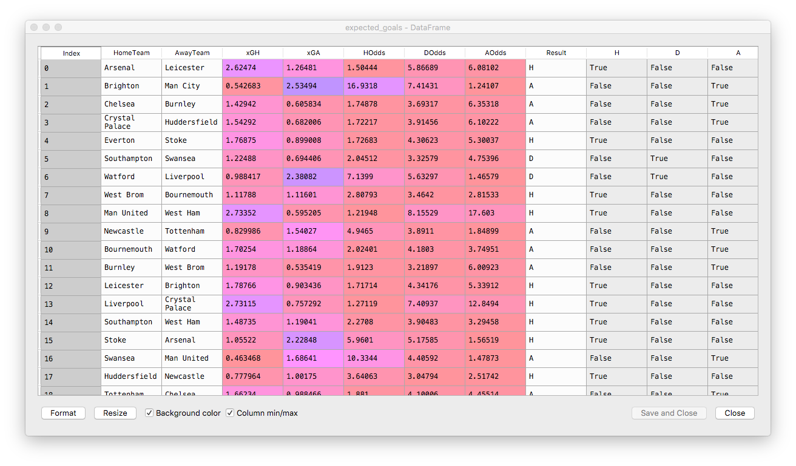
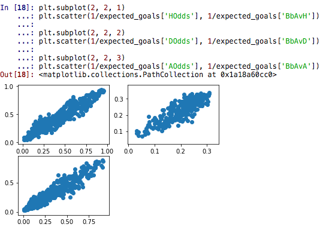
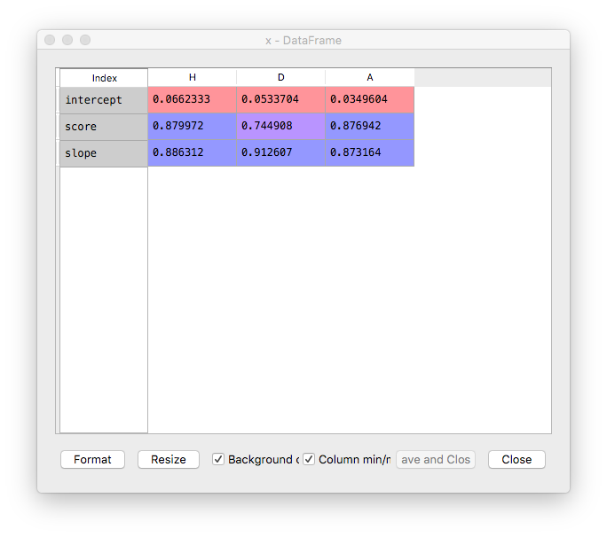
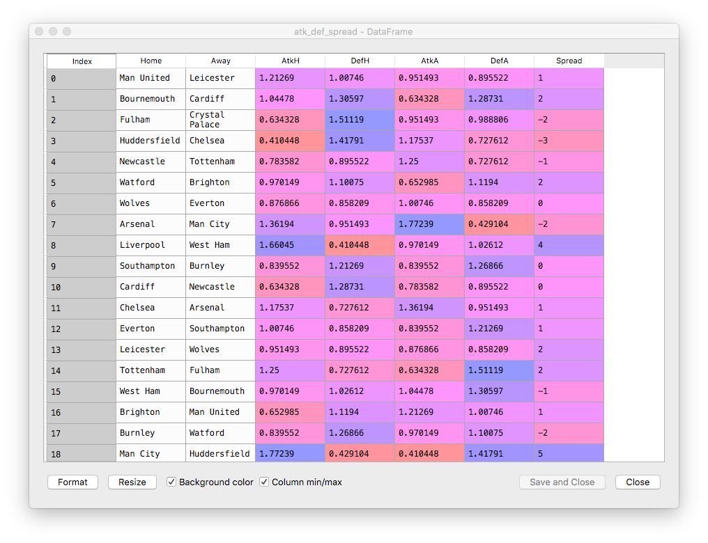
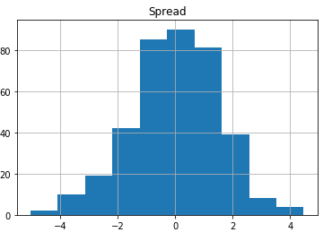
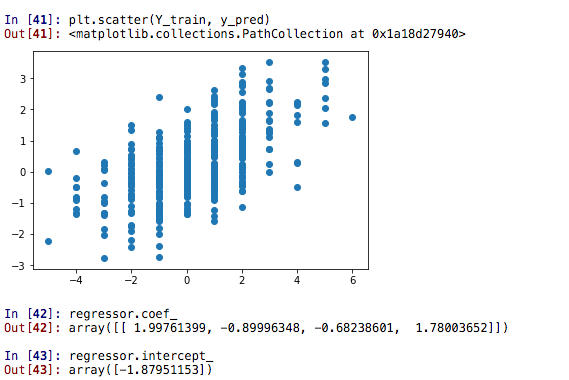
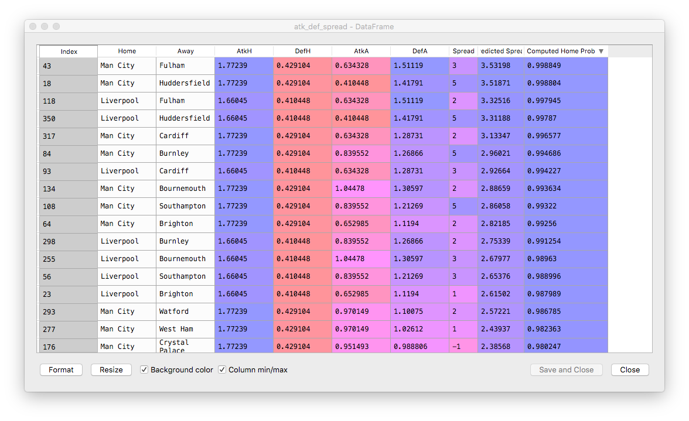
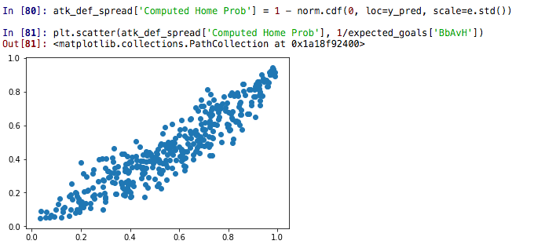
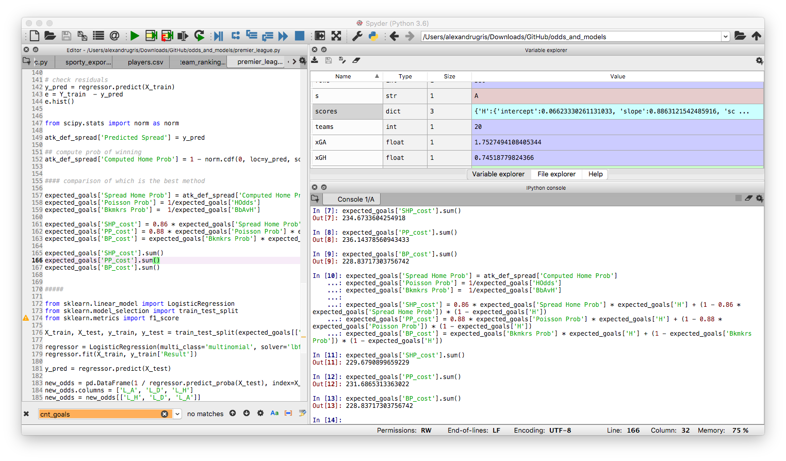

Odds And Models
Experiments with sports prediction models. It starts from a multiplicative expected goals model, then it computes the odds for home draw away markets in two different ways, and then compare the performance of these odds to the bookmakers' odds.
Analyzing Premier League 2018-2019 Matches
We are going to use publicly available data, downloaded from here. In case the link disappears, here is a local copy of the csv file used for this analysis. The explanation for the columns can be found here
Expected Goals - Multiplicative Model
In the first part of the analysis we are going to use a simple multiplicative model and the Poisson distribution to compute:
- Expected goals
- Home Draw Away odds for the match and compare our results to the bookmakers odds
Another way to have looked at this analysis is to reverse engineer the expected goals by looking at the bookmakers odds for HDA and OU and use gradient descent to minimize the function (h_predicted - h_bkmkr)^2 + (d_predicted - d_bkmkr)^2 + (a_predicted - a_bkmkr)^2 + (o_predicted - o_bkmkr)^2 + (u_predicted - u_bkmkr)^2.
The principle behind this model is to compute an attack and a defence score for each team relative to the season averages. The home team advantage is embedded in the model by applying the factors to the home and away means, respectively. These are the relevant lines:
xGH = h_attack * a_defence * home.mean()
xGA = a_attack * h_defence * away.mean()
Below is the full code:
import pandas as pd
import numpy as np
import matplotlib.pyplot as plt
# https://datahub.io/sports-data/english-premier-league#readme
data = pd.read_csv("season-1718_csv.csv") # todo: add index on team names!
rows = len(data)
teams = int(np.sqrt(rows)) + 1
home = data['FTHG'] # full time home goals series
away = data['FTAG'] # full time away goals series
avg_goals_scored = (home.mean() + away.mean()) / 2
def attack_defence(team):
attack = (data['FTHG'].loc[data['HomeTeam'] == team].mean() + data['FTAG'].loc[data['AwayTeam'] == team].mean()) / (2 * avg_goals_scored)
defence = (data['FTAG'].loc[data['HomeTeam'] == team].mean() + data['FTHG'].loc[data['AwayTeam'] == team].mean()) / (2 * avg_goals_scored)
return (attack, defence)
def xg(home_, away_):
h_attack, h_defence = attack_defence(home_)
a_attack, a_defence = attack_defence(away_)
xGH = h_attack * a_defence * home.mean()
xGA = a_attack * h_defence * away.mean()
return (xGH, xGA)
# compute the expected goals for each team
xGH, xGA = xg('Brighton', 'Tottenham')
In this case, the result would be: xGA=1.7696721143296168 and xGH=0.7235778121818841. While this model is crude, it is a good starting point into our data exploration.
Predicting Odds Based on The Poisson Distribution
We are going to use now the observation that goals in a football match are roughly Poisson distributed, to compute any goal-based markets. In our case, we are going to look at the Home Draw Away markets. The same approach can be used to reverse engineer the expected goals from existing bookmakers odds, the Home Draw Away and Over Under markets.
from scipy.stats import poisson
def hda(xGH, xGA):
h = np.array([poisson.pmf(x, xGH) for x in range(0, 10)])
a = np.array([poisson.pmf(x, xGA) for x in range(0, 10)])
ret = [0, 0, 0]
for i in range (0, 10):
for j in range (0, 10):
if i > j:
ret[0] += h[i] * a[j]
if i == j:
ret[1] += h[i] * a[j]
if i < j:
ret[2] += h[i] * a[j]
return 1 / np.array(ret)
def expected_goal_odds(row):
hm = row['HomeTeam']
aw = row['AwayTeam']
hmg = row['FTHG']
awg = row['FTAG']
xGH, xGA = xg(hm, aw)
[h, d, a] = hda(xGH, xGA)
return (hm, aw, xGH, xGA, h, d, a, row['FTR'], hmg > awg, hmg == awg, hmg < awg, row['BbAvH'], row['BbAvD'], row['BbAvA'])
expected_goals = data.apply(expected_goal_odds, axis=1, result_type='expand')
expected_goals.columns=['HomeTeam', 'AwayTeam', 'xGH', 'xGA', 'HOdds', 'DOdds', 'AOdds', 'Result' ,'H', 'D', 'A', 'BbAvH','BbAvD','BbAvA']
What we get is this:

Disclaimer: I know that I am making an error here, because I am including in the source data set the same match that I am trying to predict, which leads to a circular relationship. In a production-ready analysis, at least this match should have been excluded from the source.
The last 3 columns expand for further analysis the actual match result. These results look nice, but let's compare them to the Bet Brain HDA average index for these odds. There is quite a bit of a difference. A good place to start betting is to have a look at those odds which, in our model, are lower than the bookmaker's. Despite the margin embedded in them, the bookmaker's odds might still be skewed up by their risk management systems, so there is a chance we might find and edge.
Here are the distribution of probabilities:
plt.scatter(1/expected_goals['HOdds'], 1/expected_goals['BbAvH'])
plt.scatter(1/expected_goals['DOdds'], 1/expected_goals['BbAvD'])
plt.scatter(1/expected_goals['AOdds'], 1/expected_goals['BbAvA'])

Doing linear regression between our values and the bookmakers values we get:
from sklearn.linear_model import LinearRegression
scores = {}
for s in ['H', 'D', 'A']:
X = 1/expected_goals[s + 'Odds']
y = 1/expected_goals['BbAv' + s]
X = X.values.reshape(-1, 1)
linear_regressor = LinearRegression() # create object for the class
linear_regressor.fit(X, y) # perform linear regression
scores[s] = {
'intercept' : linear_regressor.intercept_,
'slope' : linear_regressor.coef_[0],
'score' : linear_regressor.score(X, y)
}

Conclusions To Our First Model
- There is a strong correlation between our model and the bookmakers models.
- Our predicted probability tends to grow slightly faster than the bookmaker predicted probability.
- We can transform now our model through this function to predict what the bookmakers might say, to fill in the blanks for missing data-points in scraped data, if our application relies on such a thing.
- Where our odds are lower than the bookmaker's, it is worth investigating further if we might have a have a value bet.
Predicting Home Draw Away Odds Based On Estimated Spread
The knowledge that in football games goals are Poisson distributed is awesome! It allows us to compute the probability for any number of goals, thus it allows us to calculate any market we want. We can apply the same distribution, with more or less accurate results to red cards and yellow cards, assists, shots, shots on target.
But what if we didn't have this knowledge? What if the the Poisson-based model returns questionable results?
We are going to use a different approach now which aims to estimate the spread (home - away goals difference) by regressing against the actual past match results and then use the distribution of residuals to estimate the probability of one team winning over the other.
The spread estimation is still based on the expected goals computed earlier, so we are reusing the same data.
First step is to prepare the data.
def attack_defence_spread(row):
hm = row['HomeTeam']
aw = row['AwayTeam']
hmg = row['FTHG']
awg = row['FTAG']
atk_h, def_h = attack_defence(hm)
atk_a, def_a = attack_defence(aw)
spread = hmg - awg
return (hm, aw, atk_h, def_h, atk_a, def_a, spread)
atk_def_spread = data.apply(attack_defence_spread, axis=1, result_type='expand')
atk_def_spread.columns = ['Home', 'Away', 'AtkH', 'DefH', 'AtkA', 'DefA', 'Spread']

Second step is to do regression analysis. We have chosen as predictor variables the attack and defece strengths of our opponent teams.
X_train = atk_def_spread[['AtkH', 'DefH', 'AtkA', 'DefA']]
Y_train = atk_def_spread[['Spread']]
regressor = LinearRegression()
regressor.fit(X_train, Y_train)
# check R^2
print(regressor.score(X_train, Y_train))
# check residuals
y_pred = regressor.predict(X_train)
e = Y_train - y_pred
e.hist()
When we analyse the residuals we are happy to notice they look very much normally distributed around the 0 value:
In [62]: e.mean()
Out[62]:
Spread 1.168656e-17
dtype: float64

However, the results of the regression are a little bit counter intuitive:

Now we are going to do the last step of this analysis and we are going to compute the odds of home draw away based on the residuals. We are going to use cumulative distribution function in this case which, by definition, is p(A <= x) = cdf(x). Since our distribution of residuals is normal, we will use the norm.cdf function.
atk_def_spread['Predicted Spread'] = y_pred # for eyeballing our predicted spread
from scipy.stats import norm as norm
atk_def_spread['Predicted Spread'] = y_pred
## compute prob of winning
atk_def_spread['Computed Home Prob'] = 1 - norm.cdf(0, loc=y_pred, scale=e.std())

Comparing New Odds to Bookmaker's Odds
The scatter plot:

The regression parameters:
'intercept': -0.021273267737595025'slope': 0.8639928039354018'score': 0.8632736293163973
Which basically means a rather similar quality model to the Poisson based.
Which Method Fares Better?
We are going to compute a score for each method, as follows: the winner is the system for which the probability of observing the very set of events that occurred in real life is the highest. For instance, a system that would predict 100% accurate the results would have a maximum probability of 1.
P(realization of the observed result) = product(p(each individual_result)) is max <=>
log() = log(product) is max <=>
log() = sum(p(1) * result + p(0) * (1 - result)) is max
The code that implements it is shown below:
expected_goals['Spread Home Prob'] = atk_def_spread['Computed Home Prob']
expected_goals['Poisson Prob'] = 1/expected_goals['HOdds']
expected_goals['Bkmkrs Prob'] = 1/expected_goals['BbAvH']
expected_goals['SHP_cost'] = expected_goals['Spread Home Prob'] * expected_goals['H'] + (1 - expected_goals['Spread Home Prob']) * (1 - expected_goals['H'])
expected_goals['PP_cost'] = expected_goals['Poisson Prob'] * expected_goals['H'] + (1 - expected_goals['Poisson Prob']) * (1 - expected_goals['H'])
expected_goals['BP_cost'] = expected_goals['Bkmkrs Prob'] * expected_goals['H'] + (1 - expected_goals['Bkmkrs Prob']) * (1 - expected_goals['H'])
expected_goals['SHP_cost'].sum()
expected_goals['PP_cost'].sum()
expected_goals['BP_cost'].sum()
with the following results:
expected_goals['SHP_cost'].sum()
Out[7]: 234.6733604254918
expected_goals['PP_cost'].sum()
Out[8]: 236.14378560943433
expected_goals['BP_cost'].sum()
Out[9]: 228.83717303756742
So, in theory, the bookmakers are able to predict with lesser accuracy the probability of winnings. However, we don't have much data to support the extreme event cases, thus I'd expect the bookmakers to have corrected for the lack of data.
In the computation above I have not included the correction factors resulted from regression. When I introduce the factors manually, the results are impressively close:
